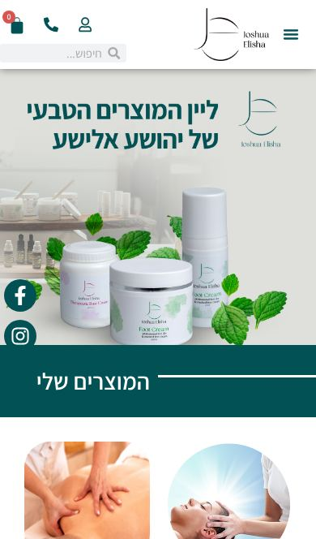
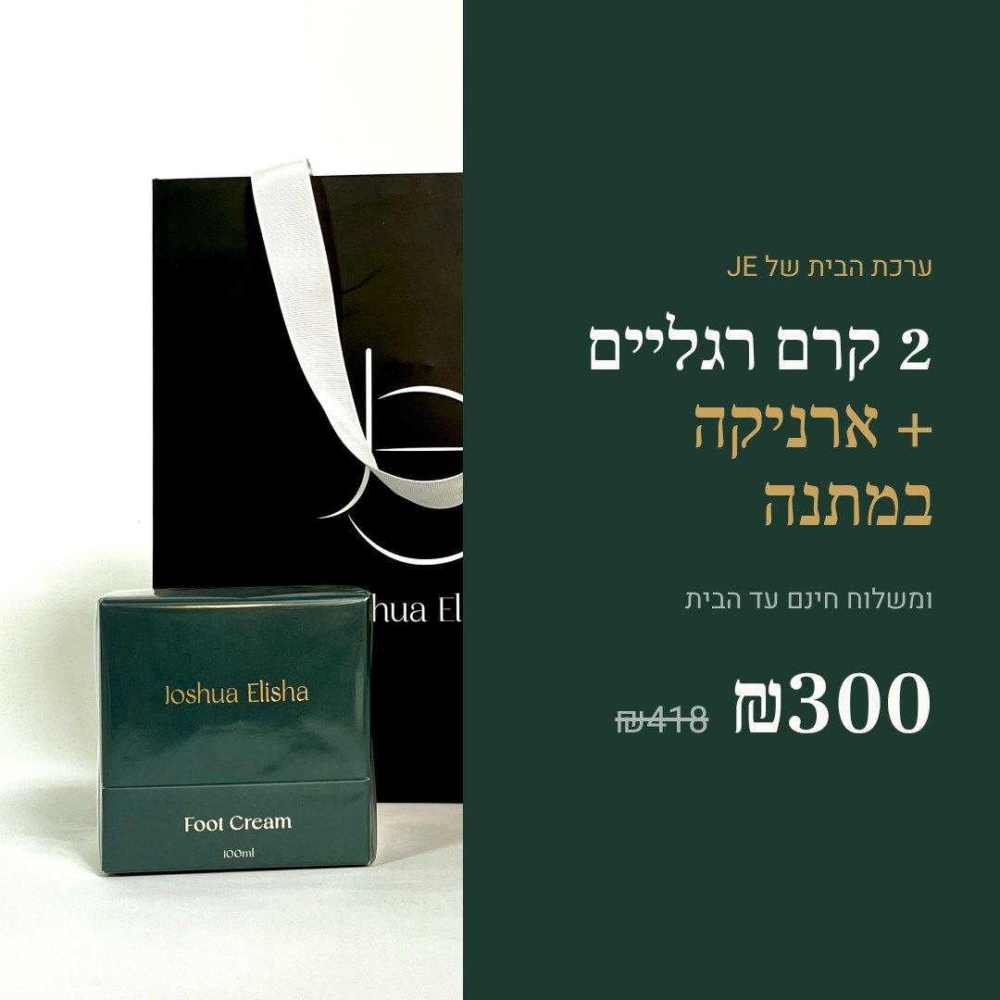

yehoshuatherapy.co.il · נבדק ב־9 בנובמבר 2026
למה אנשים נכנסים ולא קונים
בדקתי את דף הבית, דף קרם הארניקה, דף קרם הרגליים ודף המבצע. הבדיקה נעשתה לפי עקרונות העיצוב של Apple (Human Interface Guidelines), בנייד ובמחשב, ובמדידות אמיתיות מהדפדפן.
השורה התחתונה
דירוג: בעיות קריטיות. המוצר עצמו נראה כמו מוצר פרימיום: צנצנת זכוכית ענבר, תווית זהב, קופסה בירוק עמוק ושקית שחורה. האתר מציג אותו כמו חנות כללית משנת 2020. מי שמגיע מחפש קרם לכאב הגב. הוא פוגש סליידר, 12 פריטים בתפריט, טיפולי הילינג, קורסים, כניסה למטפלים ושש תוספות תזונה, ולא מבין מה לקנות ולמה דווקא כאן.
לאתר אין "תזה", כלומר אין משפט אחד שאומר מה האתר מוכר. עקרון ה־Purpose של Apple שואל: "What is this screen for?". בדף הבית הנוכחי התשובה היא "הכול", ולכן בפועל אין תשובה.

ממצאים קריטיים: מה עוצר רכישות
קריטיאין מוצר ואין הבטחה במסך הראשון
- הבעיה
- המסך הראשון הוא סליידר של 6 שקפים. הטקסט עליו, "ליין המוצרים הטבעי", מופיע בירוק דהוי על רקע תמונה בהירה. אין בדף אף כותרת H1. המוצר הראשון ברשימה הוא מבצע קרם רגליים, לא הארניקה. אחריו מגיע "מוצרים אחרונים", ושם טיפולים ב־₪400 עם כפתור "הוספה לסל".
- למה
- Apple: "Keep focused. Prioritize your app's most important features."design-principles.md › Simplicity
- תיקון
- מסך פתיחה אחד: הצנצנת, "מריחה קטנה. הקלה גדולה.", המחיר וכפתור אחד. הקליניקה והקורסים עוברים למטה.
קריטיכפתורי קנייה קטנים מדי
- הבעיה
- "הוספה לסל" בכרטיסי המוצר בגודל 99×28 פיקסלים. "בחר סכום" בגודל 90×28. באגודל קשה ללחוץ עליהם, וזה בדיוק הכפתור שמכניס כסף.
- למה
- "Offer sufficiently sized controls… Strive to meet the recommended minimum control size". ב־iOS המינימום המומלץ הוא 44×44.accessibility.md › Mobility
- תיקון
- כל הכפתורים באתר החדש הם 48–58 פיקסלים בגובה. בנוסף, בדף המוצר יש פס קנייה דביק בתחתית המסך.
קריטיהאתר כבד ואיטי
- הבעיה
- דף הבית בנייד: 8.6MB. במחשב: 6.7MB, 114 בקשות לשרת ו־7 שניות עד טעינה מלאה. דף הארניקה במחשב: 3.3MB. ב־Elementor יש 9,030 אזכורים בקוד של עמוד אחד, והתפריט משוכפל 4 פעמים בקוד.
- למה
- מי שמגיע ממודעה בפייסבוק עוזב לפני שהעמוד נטען. כל שנייה כזו עולה בהמרות. זו הערכה מקצועית; הנתונים נמדדו כאן.
- תיקון
- האתר החדש: HTML ו־CSS נקיים, תמונות WebP של 25–35KB, וסרטון רקע של 0.5MB שמתבטל אוטומטית במצב חיסכון בנתונים.
קריטיטענות רפואיות על מוצר קוסמטי
- הבעיה
- בדף הארניקה: "עוזר להחלמה של שברים ונקעים", "שמן זית מוריד לחץ דם", "קמפור יעיל למחלות זיהומיות". בדף קרם הרגליים: "יעילה לפסוריאזיס" ו"מטפל בפטריות". באותו דף כתוב "מוצר זה הינו מוצר קוסמטי".
- למה
- טענות כאלה על מוצר קוסמטי עלולות לחשוף את העסק לבעיה רגולטורית, ויכולות לגרום לחסימת מודעות בפייסבוק ובגוגל. קונה ספקן מזהה אותן מיד ומאבד אמון. זה לא ייעוץ משפטי. מומלץ לבדוק מול יועץ רגולציה.
- תיקון
- באתר החדש כל הניסוחים קוסמטיים: "תחושת קרירות מרעננת", "לעיסוי אחרי מאמץ". נוספה הבהרה שהמוצר אינו תחליף לטיפול רפואי.
קריטיכתובת מייל שגויה: לידים הולכים לאיבוד
- הבעיה
- בכותרת התחתונה של כל עמוד מופיע
selisah747@gmail.com. בדפי המוצר מופיעselisha747@gmail.com. אחת מהן שגויה, וכל סיטונאי שכותב אליה לא מקבל תשובה. - תיקון
- לבדוק מה הכתובת הנכונה ולתקן בכל המקומות. באתר החדש הופיעה בינתיים
selisha747, שהיא הכתובת מדפי המוצר. לאישור המנהל
שיפורים בעדיפות גבוהה
גבוהתמונות של אריזה ישנה בדף הבית
- הבעיה
- הסליידר מציג צנצנות פלסטיק לבנות עם עלי נענע. הלקוח מקבל צנצנת ענבר וקופסה ירוקה. הפער בין מה שרואים למה שמגיע פוגע באמון.
- תיקון
- האתר החדש בנוי כולו סביב האריזה הנוכחית. ממנה נלקחו גם הצבעים: ענבר (#8F4F14), ירוק יער (#1D3A31) וזהב התווית (#C9A35A).
גבוהמוצרים "קשורים" שלא קשורים
- הבעיה
- מתחת לקרם הארניקה מוצעים כורכומין, קרנביוטיק ו"ברא מגן". מתחת לקרם הרגליים מוצעות טיפות לסינוסיטיס ותמצית לדלקות בדרכי השתן. ההצעה הטבעית, קרם הרגליים או ערכת הבית, לא מופיעה.
- תיקון
- בדף החדש יש בחירה אחת: צנצנת אחת, שתיים או ערכת הבית (₪300 במקום ₪418). מפת הכאב ממליצה על המוצר המתאים לכל אזור.
גבוהההמלצות נראות ישנות ולא אמינות
- הבעיה
- ההמלצות בדף הבית מתוארכות ל־2010 ול־2020. בדף המבצע כתוב "אלפי לקוחות מרוצים", בלי מקור. בהמלצות על המוצרים השם מאוית "יהושוע" (7 פעמים בכל דף מוצר). אין דירוג כוכבים ואין מערכת ביקורות.
- תיקון
- באתר החדש מופיעות רק ציטוטים אמיתיים מהאתר, בלי מספרים מומצאים. ההמלצה: להפעיל ביקורות מאומתות ב־WooCommerce ולשלוח לכל קונה הודעת וואטסאפ אחרי 10 ימים עם בקשה לביקורת.
גבוהגוגל לא יודע שזה מוצר עם מחיר
- הבעיה
- בדף הארניקה אין נתוני Product מובנים (schema.org). לכן בתוצאות החיפוש לא יופיעו מחיר, זמינות ודירוג. תיאור הדף בגוגל מתחיל במילים "קרם ארניקה הוא תכשיר שתמיד כדאי שיהיה לכם בהישג יד…".
- תיקון
- באתר החדש נוספו נתוני Product עם מחיר ומלאי, ותיאור דף שמתחיל במה שמחפשים: הרכב, מחיר ומשלוח.
גבוה"כי יש לי כוח" בדף הבית
- הבעיה
- מי שמחפש קרם לגב פוגש כבר בדף הבית את המשפט "קיבלתי כוחות אנרגטיים שמסייעים לי לאבחן". למטופלים ותיקים זה חלק מהסיפור. לקונה חדש ממודעה זה מעורר ספק. זה שיפוט מקצועי, לא הנחיה של Apple.
- תיקון
- הסיפור של יהושע נשאר, אבל מתחיל ממה שמשכנע ספקנים: "הגעתי מעולם טכני ולא האמנתי, עד שראיתי תוצאות". ההילינג נשאר בתוך עמוד הקליניקה.
גבוהיותר מדי דברים צפים מסביב
- הבעיה
- בצד המסך צפים אייקון אינסטגרם, אייקון פייסבוק, תמונת פורטרט ווואטסאפ. בתחתית יש פס משלוח חינם עם כפתור "לסגירה" שחור שתופס כ־100 פיקסלים. במחשב, כפתור "התחברות למטפלים" בצבע הראשי מתחרה בחנות. הכפתורים לרשתות החברתיות שולחים את הקונה החוצה מהאתר.
- למה
- "Apply your app's accent color judiciously… use it intentionally for primary actions".branding.md
- תיקון
- באתר החדש צף רק כפתור וואטסאפ אחד. צבע הפעולה הראשי שמור לכפתורי הקנייה. הודעת המשלוח החינם נמצאת בפס דק למעלה, ובסל יש מד התקדמות: "עוד ₪60 ומשלוח חינם".
שיפורים בעדיפות בינונית
בינוניתפריט של 12 פריטים
- הבעיה
- ראשי, אודות, כתבו עלי, המומחיות שלנו, שיטות הטיפול, חנות, קורסים, בלוג, וידאו, המלצות, להזמנת טיפול, צרו קשר. בנוסף, המחרוזת "Learn more" באנגלית מופיעה 3 פעמים בכל עמוד.
- תיקון
- חמישה פריטים: קרם ארניקה, המוצרים, איפה כואב?, הקליניקה, המלצות.
בינוניטיפוגרפיה וטעויות כתיב
- הבעיה
- בשימוש שני גופנים (Assistant ו־Roboto) בלי היררכיה ברורה. יש 27 טקסטים בגודל 14–15 פיקסלים בדף הבית. טעויות כתיב: "כאבי שירים", "קרן שמכיל", "החלט מכאבים", "טיבעי", "ההזמה", "השיטות בהם".
- למה
- "Minimize the number of typefaces you use". "If you can use fewer words, do so."typography.md · writing.md › Be clear
- תיקון
- גופן תצוגה אחד, Frank Ruhl Libre, שמתאים לאופי של בית מרקחת. גופן גוף אחד, Heebo, בגודל 17 פיקסלים. ניגודיות טקסט: 15.9:1 לטקסט ראשי ו־6.1:1 למשני. המינימום הנדרש: 4.5:1.
בינוניחסרות תשובות לשאלות שעוצרות קנייה
- הבעיה
- אין זמן אספקה, אין מדיניות החזרה ליד הכפתור, אין "כמה זמן מחזיקה צנצנת" ואין התייחסות להריון או לילדים. בדף מופיע טקסט SEO ארוך במקום תשובות.
- תיקון
- באתר החדש יש שאלות נפוצות קצרות. במקומות שבהם חסר מידע, השדה מסומן לאישור המנהל.
מה האתר החדש עושה אחרת
| החלטה | למה |
|---|---|
| דף בית שמוכר מוצר אחד | הארניקה היא הגיבור, ושני המוצרים האחרים תומכים בו. הקליניקה נמצאת למטה, עם הכותרת "כשהקרם לא מספיק, באים לטיפול". |
| "איפה כואב?": מפת גוף אינטראקטיבית | זה האלמנט הייחודי של האתר. הקונה לוחץ על הגב, הצוואר או הברך, מקבל הוראות מריחה כמו בקליניקה, ומתחת להן כפתור קנייה. זה ממיר כאב לפעולה, ושום מתחרה לא מציע את זה. |
| עולם ויזואלי מתוך האריזה | ענבר, ירוק יער וזהב לקוחים מהצנצנת ומהקופסה עצמן. הלקוח רואה באתר בדיוק את מה שמגיע אליו הביתה. |
| בחירת כמות במקום מוצרים לא קשורים | אחת, שתיים או ערכת הבית ב־₪300 עם משלוח חינם. האפשרות המשתלמת מסומנת, והסל מראה כמה חסר למשלוח חינם. |
| פס קנייה דביק בנייד | ברגע שהכפתור הראשי יוצא מהמסך, מופיע בתחתית פס עם המחיר ו"הוספה לסל". |
| מחובר לחנות הקיימת | הכפתורים מוסיפים את המוצרים האמיתיים (מזהים 2676, 2282 ו־4287) לסל של WooCommerce ומעבירים לתשלום. לא צריך להחליף מערכת סליקה. |
| נגישות | כל כפתור בגודל 44 פיקסלים לפחות, ניגודיות AA, ניווט מלא במקלדת עם פוקוס נראה, טקסט חלופי לכל תמונה, כיבוי אנימציות למי שביקש תנועה מופחתת ומצב כהה. |
נכסי שיווק שנוצרו
כל הנכסים בנויים מצילומי המוצר האמיתיים ומציטוטים אמיתיים מהאתר. אין בהם מספרים או ביקורות מומצאים.

לסרטונים אין פסקול. כדאי להוסיף מוזיקה מהספרייה של Meta או TikTok בזמן העלאה, כדי לא להפר זכויות יוצרים.
איך מגיעים למאות לקוחות
האתר החדש ממיר טוב יותר, אבל את הקונים מביאים מבחוץ. זו התוכנית בסדר עדיפויות:
- מודעות Meta (פייסבוק ואינסטגרם) עם הרילס. קהלים: גילאי 35–65, עבודה פיזית, ספורט, כאבי גב. מתחילים בתקציב יומי קטן ובודקים את שלוש מודעות הפיד אחת מול השנייה. המודעה מובילה ישר לדף הארניקה, לא לדף הבית.
- גוגל: חיפוש ו־Shopping. ביטויים כמו "קרם ארניקה", "קרם לכאבי שרירים" ו"קרם לכאבי גב טבעי". נתוני ה־Product בדף מכינים אותו ל־Google Merchant Center.
- ביקורות. הודעת וואטסאפ אוטומטית 10 ימים אחרי משלוח. 20 ביקורות אמיתיות עם כוכבים שוות יותר מכל שינוי עיצובי.
- סיטונאות. לפנות למטפלים, קוסמטיקאיות ופיזיותרפיסטים עם ערכת דוגמאות. המכירה הזו כבר קיימת, רק לא מקבלת מקום באתר.
- מעקב. להתקין Meta Pixel ואירועי רכישה ב־GA4, כדי לדעת איזו מודעה מביאה קונים ולא רק קליקים.
לאישור המנהל לפני עלייה לאוויר
- כתובת המייל הנכונה: selisha747 או selisah747.
- זמן אספקה, מדיניות החזרה ותוקף המוצר (מסומנים באתר).
- ניסוחי הרכיבים: אישור שאין בהם טענה רפואית. מומלץ מול יועץ רגולציה.
- צילום חדש ומקצועי של יהושע. התמונה הנוכחית עובדה זמנית לגווני ירוק, אבל הרקע שלה עדיין עמוס.
- הדרך להעלות את האתר: להחליף את תבנית Elementor בעיצוב הזה (WooCommerce נשאר), או להעלות אותו כדף נחיתה נפרד למודעות. הקוד מוכן לשתי האפשרויות.